Intel® Graphics Performance Analyzers
User Guide
Platform View
Use the Platform View window to analyze concurrent execution of all your application threads, as well as correlate CPU and GPU activity.
To access Platform View window, select a trace for analysis in the Open Trace Capture window, and then click Open, or double-click the trace preview. The Platform View window graphically represents a distribution of performance data over time.
|
Trace title bar Displays the opened trace file name. The file name consists of the application name, capture date and time in the following format: YYYY_MM_DD_HH_MM_SS. |
|
|
Displays the opened trace data, notifications, opens the Intel® GPA User Guide, restores the default view, and changes the Intel® GPA color scheme. |
|
|
|
Filters tracks, shows event duration, zooms the selection in and out. |
|
|
Visualizes the opened trace content. |
|
Lists the opened trace content. |
|
|
Synchronization Flow Graph The arrows reveal event dependencies on the time line. Identify inefficient events synchronization leading to incomplete GPU load. To see the graphs, click one of the objects. Red arrows demonstrate parent-child relationships between events. Green arrows connect synchronization objects in UMD Driver Queues (Device Context Pane) and CPU threads. They also show synchronization points between objects. If you want to see several dependencies at a time, press and hold CTRL and pick objects by clicking.
NOTE:
This feature is only available on Windows* hosts.
|
|
|
Shows detailed information about the selection in the Trace Content pane.
NOTE:
The pane is only visible when any event or group of events is selected,
unless the Aggregated selection summary is enabled in
the Settings pane.
|
Main Toolbar
|
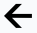Back button |
Returns to the Open Trace Capture window. |
|
Trace Overview pane |
|
|
View Options pane |
Provides controls for trace display customization:
|
|
Message pane |
Displays messages and non-critical errors.
NOTE:
If more than one message is open, use the Up or Down arrows to navigate
between messages.
|
|
Trace Info button |
Provides the following properties of the analyzed trace:
|
|
|
|
|
Help button |
Displays information on navigation controls and opens the Intel® GPA online documentation. |
Time Line Viewer Toolbar
The Time Line Viewer toolbar enables you to search and filter events, assess event position and duration on the time line, and adjust the manner of displaying the trace in the Time Line Viewer pane. The toolbar includes the following options:
-
Type Filter Expression field searches and filters events based on lexicographical comparison.
-
Match Whole Word button enables searching and filtering events by whole names.
-
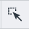Select Filtered Tasks button selects filtered events in the Time Line Viewer pane.
-
Time line ruler correlates all the displayed events with the time line. The range of the time line corresponds to the length of the trace in the current zoom level. Depending on the zoom-in level, the time intervals are displayed in seconds, milliseconds, microseconds, on nanoseconds. The default trace length is 5s.
NOTE: To mark a specific timestamp, you can create a bookmark on the time line ruler by double-clicking the necessary point on the time ruler. -
Zoom to Selection button zooms into the time range of selected events.
-
Full Zoom Out button restores the default zoom level.
Time Line Viewer Pane
Use the Time Line Viewer pane to view and configure time line tracks of the traced processes. Each track comprises the following areas:
Track Description consists of a track name and name of the process or platform, which the track belongs to, as well as the percentage or time when the device was utilized for the trace area visible in the current zoom level.
Track Data is graphic representation of performance events and other data, such as metrics and queue packages.
 Track
Toolbar closes tracks and shows metric ranges.
Track
Toolbar closes tracks and shows metric ranges.
-
CPU tracks
Visualize aggregated CPU activity reflecting thread execution on CPU cores. Use to analyze thread execution order, execution duration, and distribution between CPU cores. Blocks of the same color represent the same thread. If you zoom into the trace, you can see the process name the thread belongs to and thread execution duration.
-
GPU queues
Show GPU queues for all active video adapters generating graphics content. GPU queues can be of different types depending on the application. The Time Line Viewer pane visualizes GPU utilization over time: execution of the DMA packages on GPU. DMA package color corresponds to the color of the thread, from which the DMA package was submitted. All DMA packages have names visible on mouse hover. Additionally, DMA packages, which are essential for analysis, are marked with different icons depending on their type:
-
Render package. Render package with a present call is crosshatched.
-
Signal package
-
Wait package
-
Paging package
Selecting any of these packages shows an arrow that reveals calls in CPU threads related to that package. For example, you can trace the origin of a Render package from the CPU thread, to the User-Mode Driver, and up to the hardware queue.
-
-
Flip queues
Shows flip queues for all active video adapters. Flip queue reflects the relationship between the application present calls, present packages of GPU/CPU queues, and Vertical Synchronization (VSync) event of the monitor. Flip queue package consists of two blocks: solid-color and crosshatched. Solid-color block shows the time when Desktop Window Manager (DWM) is generating the content that needs to be displayed. The crosshatched block shows the time during which the content waits for the moment to be displayed (VSync).
NOTE: For applications utilizing layered flip queues, multiple layers can be displayed as sub-tracks of the general Flip Queue track. -
CPU queues
Shows CPU queues for all processes generating graphics content. CPU queue represents ordered command packages to be executed, but not yet submitted to GPU. CPU queues can be of different types depending on the application. CPU queue package color corresponds to the color of the thread, from which the CPU queue package was submitted. All CPU packages have names visible on mouse hover. Additionally, CPU packages, which are essential for analysis, are marked with different icons depending on their type:
-
Render package. Render package with a present call is hatched for packages named Present Token and crosshatched for packages named Present Render.
-
Signal package
-
Wait package
-
Paging package
CPU synchronization is represented as WaitForSingleObject, WaitForMultipleObjects, SetEvent, and ReleaseSemaphore function calls on the time line track of the threads. You can use these captured events to profile different synchronization issues.
Click on any of these events to visualize dependencies between synchronization events in the form of arrows. For example, an arrow pointing from a SetEvent call in one thread to a WaitForSingleObject call in a different thread indicates that a thread was unblocked by a SetEvent call in another thread.
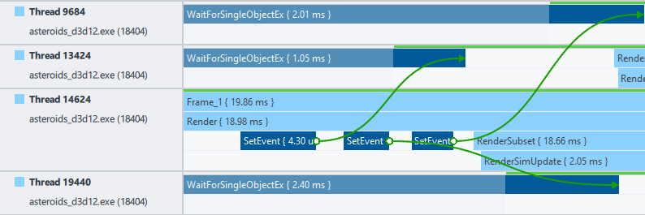On CPU queues tracks, areas where a thread was active are highlighted as green bars. Areas where a thread was idle are shown as gray bars.
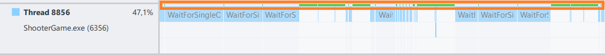A thread is considered active and is highlighted accordingly if this thread was actively executed on a CPU core at this time.
NOTE: To see OpenCL™ API calls on CPU tracks, enable OpenCL domain in Options. -
-
Events
Shows events as markers that have a timestamp, but do not have duration. Markers scope can be global or process-defined. Markers are visualized as colored triangles. Global markers are placed on the Time Line ruler; process-defined markers are shown on executed threads.
-
Metrics
Shows any GPU/CPU metrics, which you enabled in System Analyzer or System Analyzer HUD.
-
Regions
Shows regions, which are logical application execution blocks, defined with Instrumentation and Tracing Technology API (ITT API) or graphics debug API. By default, block color corresponds to the color of the time line track. Each block has a name and duration.
-
Threads track
Shows executed threads of profiled processes. Use this data to analyze your application performance and behavior based on ITT API and system events. Each colored block represents a logical block of application execution marked up by the user or generated by the system. Each block has a name and duration, and can have nested blocks. By default, block color corresponds to the color of the time line track.
-
Parallel Execution track
Parallel Execution track visualizes how the driver parallelizes execution of submitted render events.
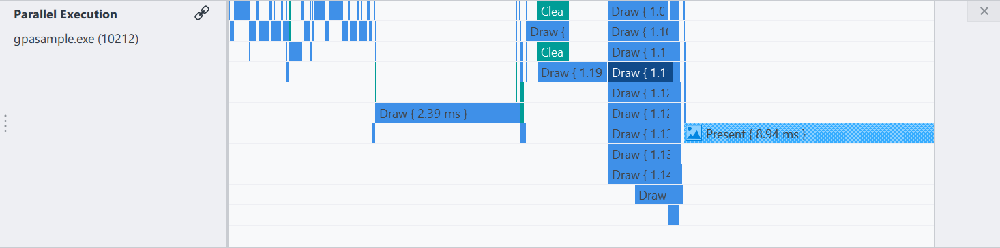 -
OpenCL Execution tracks
OpenCL Execution tracks visualize execution of OpenCL kernels on a GPU or a CPU. To see the dependency between the tasks of submitting and executing a particular kernel, click any OpenCL packet or OpenCL API call on the CPU Thread track.
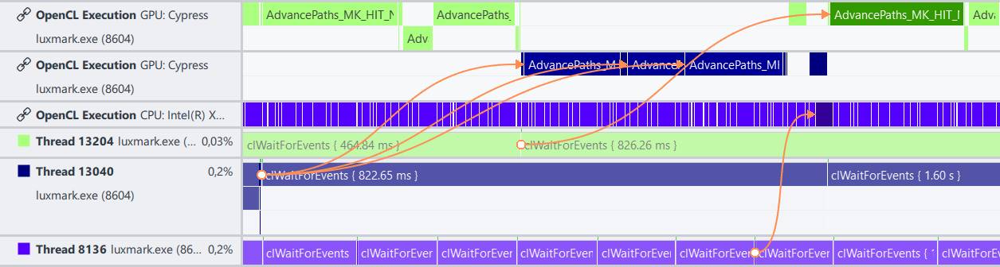The data is useful to spot synchronization issues or understand whether there is a problem in OpenCL code if you use different APIs. For example, if OpenCL Execution track is fully loaded, you can detect a problematic kernel for detailed profiling with Intel® VTune™ Profiler.
To see OpenCL Execution tracks, enable OpenCL domain in Options.
-
Shader Breakdown tracks (Windows only)
Shader Breakdown tracks visualize workload distribution among shaders and asynchronous compute work for floating-point unit and extended math pipes.
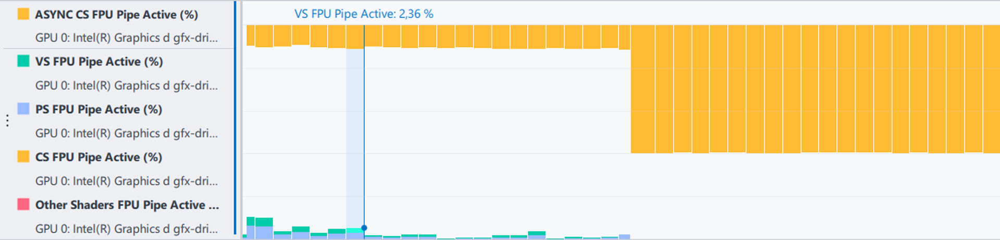Shader Breakdown track contains two types of bars:
-
Bars on the top show the percentage of time when the Execution Unit (EU) was performing asynchronous compute work from the compute queue.
-
Stacked bars show the percentage of time per shader when the EU was executing shader instructions from the main graphics queue.
The track contains the data for the following types of shaders:
-
Compute shader (CS)
-
Vertex shader (VS)
-
Pixel shader (PS)
-
Other shaders, for example, mesh or ray tracing shaders
Hover over the bar to see the percentage above the track.
To see Shader Breakdown tracks, enable AsyncCompute metric set and select any GPU sampling interval except Frame in Options.
NOTE:- From the 9th to the11th generation Intel Core™ processor family, only shader workload distribution data is available in Shader Breakdown tracks. Asynchronous compute data is available starting with the 12th generation Intel Core™ processor family.
-
Families of Intel® Xe graphics products starting with Intel® Arc™ Alchemist (formerly DG2) and newer generations feature GPU architecture terminology that shifts from legacy terms. For more information on the terminology changes and to understand their mapping with legacy content, see GPU Architecture Terminology for Intel® Xe Graphics.
-
Trace Content Pane
|
Type Filter Expression field |
Filters trace file tracks by name or parameters. Saves previous search keywords. |
|
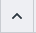Collapse All Groups button |
Closes all unfolded track groups. |
|
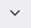Expand All Groups button |
Unfolds all track groups. |
|
Track list |
Includes aggregated information on trace file content in the following order:
NOTE:
|
Selection Statistics Pane
Use the Selection Statistics pane to view summary information for the selected objects in the Trace Viewer. You can select objects in the Trace Viewer in several ways:
-
Single Selection
Left-click any object in the track.
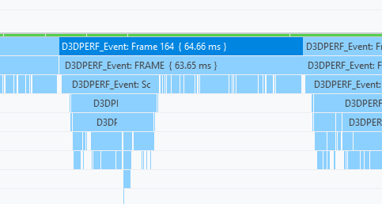 -
Group Selection
Left-click any objects in tracks while keeping the CTRL keyboard button pressed down.
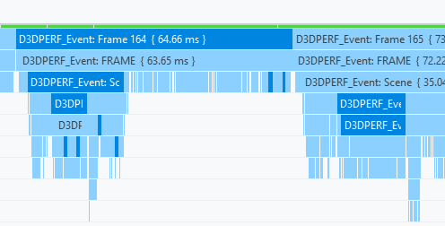 -
Rectangular Selection
Press the left mouse button and drag the mouse in any desired direction to select the required region.
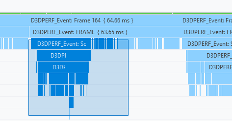 -
Range Selection
Press the right mouse button and drag the mouse horizontally to select events in all tracks within the selected range. You can change the selection by dragging the right or left boundary. The selected range includes all the intercepted tasks.
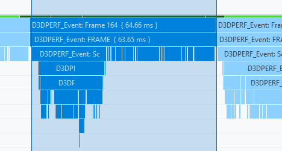
|
Aggregated Summary table All the selected events are grouped by event types:
For all the selected events you can view the following aggregated information:
|
|
|
Itemized Summary table For each selected item in the Aggregated Summary table you can view the list of events with the following information:
|
|
|
|
Performance Event Details table Shows arguments for the event selected in the Itemized Summary table. Available for GPU queue packages, CPU queue packets, and VSync events. |
To customize the displayed columns, click the button and enable/disable the required column.
See Also
Identify Issues in Graphics Application Execution with Trace Analyzer